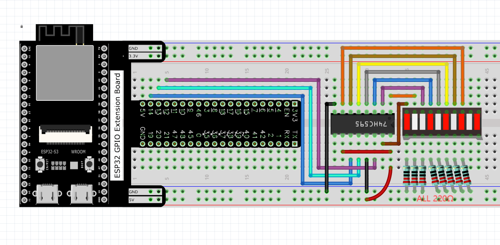

Chapter 13 74HC595 & LED Bar Graph
We have used LED bar graph to make a flowing water light, in which 10 GPIO ports of ESP32-S3 is occupied. More GPIO ports mean that more peripherals can be connected to ESP32-S3, so GPIO resource is very precious. Can we make flowing water light with less GPIO? In this chapter, we will learn a component, 74HC595, which can achieve the target.
Project 13.1 Flowing Water Light
Now let’s learn how to use the 74HC595 IC chip to make a flowing water light using less GPIO.
Component List
ESP32-S3-WROOM x1
GPIO Extension Board x1
830 Tie-Points Breadboard x1
74HC595 x1
Resistor 220Ω x8
LED Bar Graph x1
Jumper Wire x15
Connect
Code
In this project, we will make a flowing water light with a 74HC595 chip to learn about its functions. Move the program folder “Super_Starter_Kit_for_ESP 32_S3/Python/Python_Codes” to disk(D) in advance with the path of “D:/Micropyth on_Codes”.
Open “Thonny”, click “This computer” >> “D:” >> “Micropython_Codes” >> “1 3.1_Flowing_Water_Light”. Select “my74HC595.py”, right click your mouse to selec t “Upload to /”, wait for “my74HC595.py”to be uploaded to ESP32-S3 and then doub le click “Flowing_Water_Light.py”.
13.1_Flowing_Water_Light

Click“Run current script” and you will see that Bar Graph LED starts with the flowing water pattern flashing from left to right and then back from right to left. If it displays nothing, maybe the LED Bar is connected upside down, please unplug it and then re-plug it reversely.
The following is the program code:
import time
from my74HC595 import Chip74HC595
chip = Chip74HC595(12,13,14,-1)#STCP，SHCP，DS，OE
# ESP32-12: 74HC595-STCP(12)
# ESP32-13: 74HC595-SHCP(11)
# ESP32-14: 74HC595-DS(14)
# ESP32-GND : 74HC595-OE(13)
while True:
x=0x01
for count in range(8):
chip.shiftOut(1,x)
x=x<<1;
time.sleep_ms(300)
x=0x01
for count in range(8):
chip.shiftOut(0,x)
x=x<<1
time.sleep_ms(300)